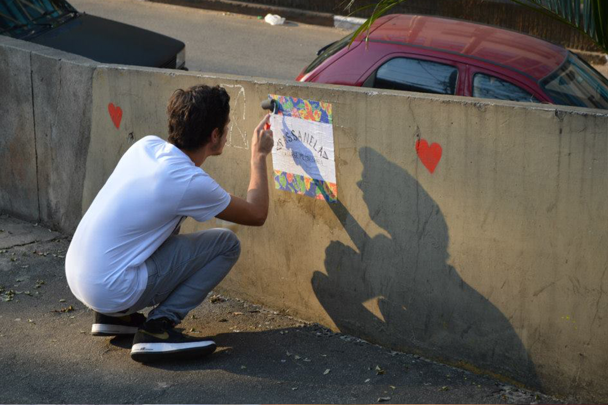
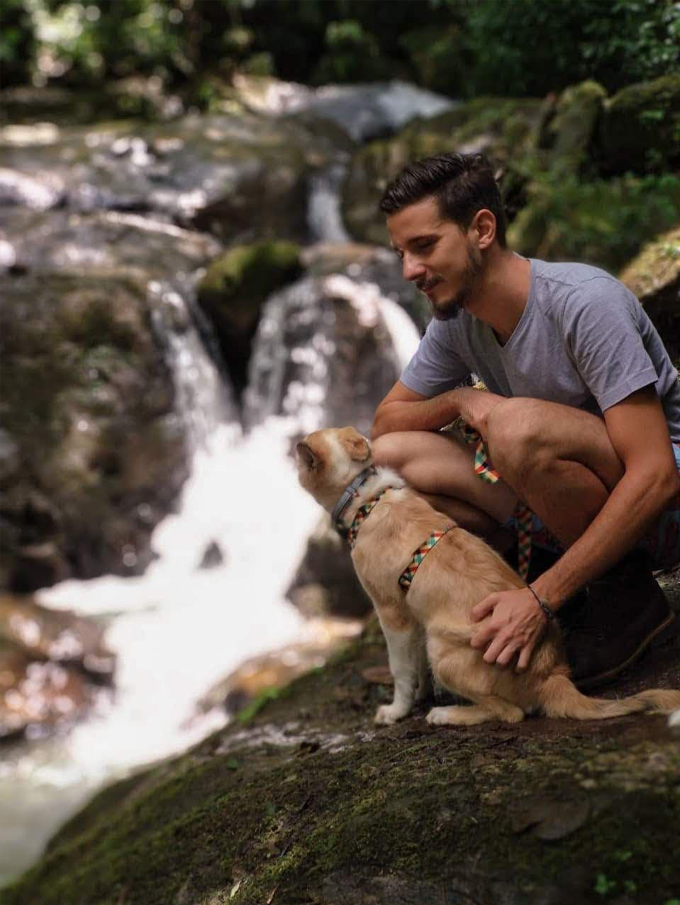
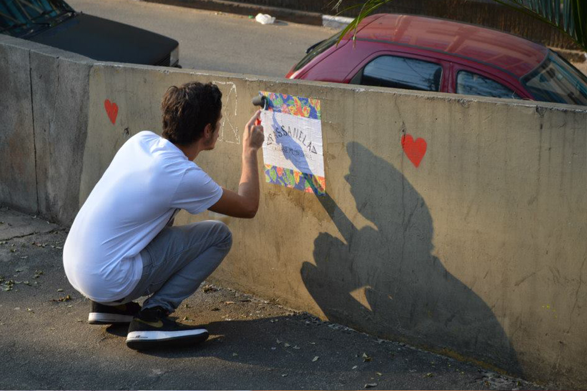
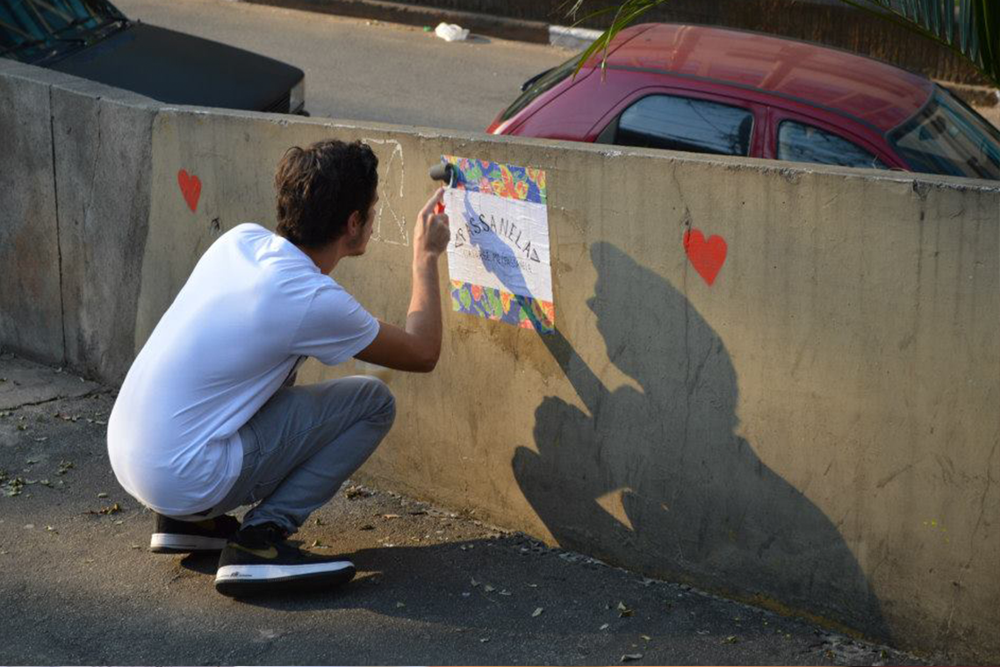
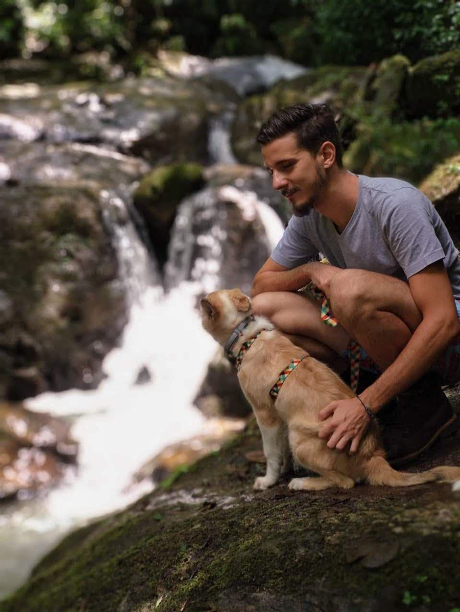
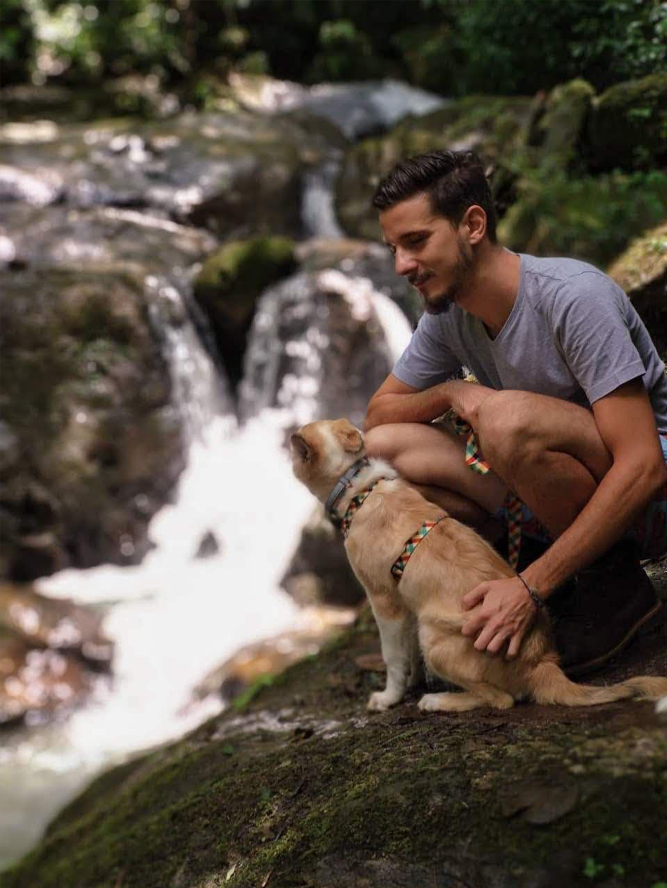

Sou um UX Designer e Arquiteto e Urbanista de formação buscando minha primeira oportunidade de trabalho.
No trabalho
Sou uma pessoa extremamente criativa, nunca largo a lapiseira e estou sempre demonstrando minhas idéias através de desenhos. Como arquiteto sou muito focado em apresentar minhas soluções de forma visual e sempre focado na solução de problemas dos usuários.

Na vida
Apaixonado por ciclismo e mobilidade urbana, sempre envolvido em trabalhos sociais que visem mudar a cidade de forma positiva. Gosto de sair pela cidade descobrindo coisas novas
(nunca faço o mesmo caminho pra ir e voltar pra casa).
Adoro conhecer novos restaurantes e sair pra correr com a minha cachorra.

Experiência
Associação Flor e Ser • UX Researcher
2021
Responsável pela pesquisa sobre usuários, métricas e desenvolvimento de User Flow para um novo site para a Associação. Apresentação dos dados quantitativos e qualitativos sobre usuários para as equipes de design e desenvolvedores.
Ateliê Navio • Arquiteto Coordenador
2019.2020
Coordenação da equipe de projetos de arquitetura voltados à primeira infância.
Responsável por projetos de praças em Aracaju e reforma de escolas para
atendimento de novas diretrizes de ocupação pós pandemia.
Habilidades
Prototipação • Design Thinking • Jornadas de Usuário • Personas • Mapas
de Empatia • Benchmarking • User Research • Análises Heurísticas •
Facilidade de comunicação • Trabalho em equipe • Facilidade de aprendizado
Ferramentas
Figma • Sketch • Miro • Balsamiq • Invision • Adobe CC • Hot Jar • Google Analytics
Idiomas
Inglês • Fluente
Português • Nativo
Faça download de uma cópia do meu currículo em PDF:


 

 
